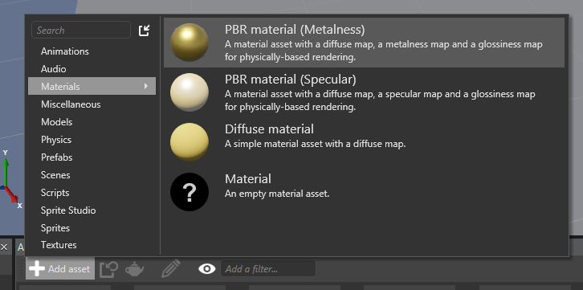
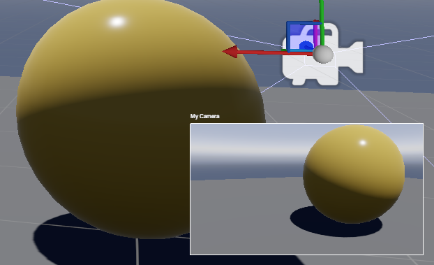
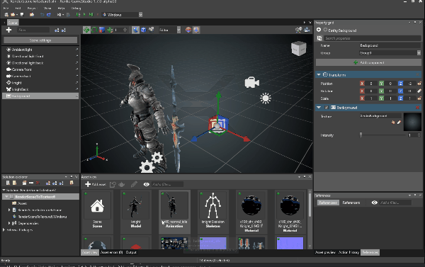
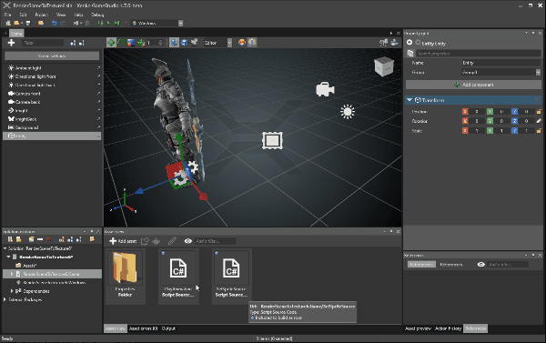
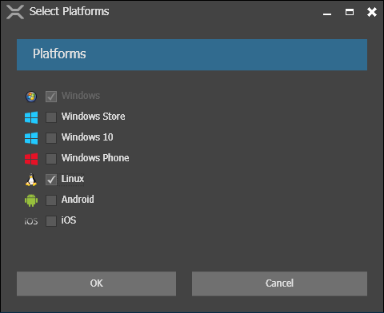
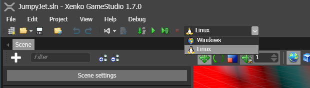

Xenko release notes 1.7
Highlights
Rendering
Forward+
Xenko now features Practical Clustered Shading, a technique similar to Forward+ rendering.
It allows you to use many point and spot lights at the same time. You will gain more control over the lighting of your scene by adding lights wherever they are needed. It also works with transparent objects out of the box, just like ordinary forward rendering does.
If your game requires Direct3D10+ (or equivalent OpenGL), this will be the default setting - no changes needed! As a bonus, you'll see a decrease in compilation times and the number of shader permutations.
We also took this opportunity to rewrite most of our lighting code for improved performance and extensibility.
Vulkan
Vulkan joins our happy family of graphics platforms! Experimental support has also been added for Windows and Linux. Android will follow soon.
Together with Direct3D12 and the recent overhaul of our rendering pipeline, this is another step toward preparing Xenko for the next generation of graphics. Stay tuned for performance improvements and hard numbers in the near future.
Try running your project on Vulkan by selecting it as the Preferred Graphics Platform in the Rendering Settings of your Game Settings asset.
GameStudio Improvements
Simplified Asset Creation
The workflow to create assets has been simplified! The new menu for asset creation contains multiple templates for each type of asset. You can now import assets from files more directly. With Xenko's efficient search function, creating assets should be faster and easier than ever!

Camera Preview
We've updated GameStudio's camera preview to now display only the camera currently selected. It also now displays the borders and the camera's name making it easier to see the camera and it's settings.

Drag & Drop Assets into the Property Grid
So far, you could drag & drop assets into your scene or the tree view.
New in this release, components can now be added to entities just by dragging & dropping matching assets into the property grid.

Drag & Drop scripts
You can also drag & drop scripts directly into the scene, tree view and property view:

Linux
Linux users rejoice! Linux is now a supported platform of Xenko among Windows, Android, iOS, and more! All you need is a PC running Linux Ubuntu 16.04 x64 or equivalent with a video card supporting OpenGL 4.2 or Vulkan 1.0. Mono or .NET Core (which need to be installed separately) will be powering your game.
In order to use the Linux platform, check Linux from the list of platforms in the GameStudio then compile.

Deployment to a remote Linux box is done via SSH when running your project from GameStudio.

To know more about our Linux support, read the Linux documentation
Audio
We've rewritten our Audio engine! While most changes are internal, the public API has improved, and we are still working to make it great!
The SoundEffect and SoundMusic classes have been consolidated into Sound, also SoundEffectInstance is now SoundInstance. Sound formats are now converted using FFmpeg. Because of these updates, the range of supported formats has also improved.
Under the hood, the CELT codec (part of Opus) is now being used. We're delighted to say that performance has since skyrocketed! Music can now be mixed and crossfaded while streaming and decompressing directly from disk.
Xenko's API now builds on OpenAL for Linux/macOS/iOS, on OpenSLES for Android and on XAudio2 for Windows platforms.
How To Upgrade
This section explains how to migrate a project from version 1.6.x to version 1.7.x.
UIComponent
VirtualResolutionproperty has been renamed toResolutionVirtualResolutionModeproperty has been renamed toResolutionStretch
ISpriteProvider
The properties of type Sprite have been changed to properties of type ISpriteProvider. Currently two implementations of ISpriteProvider are available:
SpriteFromSheetfor use with aSpriteSheet(i.e. a collection ofSprite)SpriteFromTexturefor use with a singleTexture
To upgrade where a single Sprite was previously used cast the assignment with the following (SpriteFromTexture provides a convenient explicit converter from Sprite).
var button = new Button
{
PressedImage = (SpriteFromTexture)new Sprite(Content.Load<Texture>("ImageButtonPressed"))
}
To upgrade where a sprite from a SpriteSheet was previously used:
Create a new SpriteFromSheet and provide a reference to the SpriteSheet instance and the corresponding frame index.
var button = new Button
{
PressedImage = new SpriteFromSheet
{
Sheet = sprites,
CurrentFrame = sprites.FindImageIndex("ButtonPressed")
}
}
For convenience, we provide a helper method which does exactly the same: SpriteFromSheet.Create(sprites, "ButtonPressed").
To change the CurrentFrame (which now only exists in SpriteFromSheet), a cast is required:
var provider = Entity.Get<SpriteComponent>().SpriteProvider as SpriteFromSheet;
if (provider != null)
provider.CurrentFrame = SomeIndex;
SoundEffect (Instance) and SoundMusic to Sound(Instance)
Kindly note that there is no more SoundMusic. Instead, you should now use Sound and SoundInstance for any kind of sound.
From the game studio, you can now set compression ratio, spatialization or you have the option to stream the sound directly from disk.
You now need a SoundInstance to play a sound, the helper methods in Sound were convenient but a bit confusing.
You can still assign Sound assets to Scripts like before:
public Sound MySound;
private SoundInstance mySoundInstance;
Also note, the way you use them has changed. Before:
MySound.Play();
After:
mySoundInstance = MySound.CreateInstance();
mySoundInstance.Play();
Lastly, you no longer have to register (AddListener/RemoveListener) AudioListenerComponent from your code anymore.
Breaking changes
Audio
- Removed
DistanceScaleandDopplerScalesince internally not all the backends were supporting it ( we might add it back in the future as a global factor if needed) DynamicSoundEffectInstancehas been removed, you can now useDynamicSoundSourceto stream your custom sound sources. Works on every platform- Removed
SoundEffect,SoundEffectInstance,SoundMusic. Please useSoundandSoundInstanceinstead of all kind of sounds - Removed
AddListener,RemoveListenerfromAudioSystem - Many Methods that had
SoundEffectorSoundMusicin the signature now have justSound, e.g.AudioEmitterComponent.AttachSound
UI
- Font size has been completely changed to pixel height. Existing sprite font assets will be updated automatically
- Properties of type
Spritehave been changed to properties of typeISpriteProvider
Changelog
Version 1.7.0-Beta
Release date: 2016/07/01
Enhancements
General
- Debug locals were not displaying properly in some cases due to Mono.Cecil processing. This has been fixed and should now work properly.
Audio
- You can now change the Pitch/Speed of a
SoundInstance! - Added master volume control in
AudioEngine(AudioEngine.MasterVolume)
Particles
This release brings many improvements to the particle engine.
- You can now create lightning and laser effects thanks to the arc position initializers and ability to follow two target points
- Child particles support and attribute inheritance added, allowing one emitter's particles to follow and inherit attributes from another emitter's particles
- Child ribbon particle samples showing how to create wispy particle trails in a single effect
- Soft edge particles allow you to smooth out the billboard edges when rendering particles close to opaque objects
- More spawner types, including Burst, On-Hit and a few other conditional ones
- Color updater now uses a Color4 curve
Game Studio
- The selection history feature has been rewritten. It is now shared by all editors and the asset view. The buttons to navigate the selection history have been moved to the property grid
- The re-import operation has been replaced by a "Update asset from source" which directly applies the changes from the source to the asset without displaying the import UI. (For skeleton, model, sprite studio assets...)
- Dropping a large number of files to import is now a lot faster
- The notification when the sources of some assets have changed is now a dialog message instead of a notification popup on the corner of the screen
- You can now drag & drop assets directly into the Property Grid to create components
UI
- Signed Distance Field sprite font asset type added, allowing users to create sharp, scalable fonts which can be easily resized at runtime at no extra cost
- Added support for EditText on Windows 10, Windows Store and Windows Phone platforms
Assets
- The internal YAML format of the SceneAsset and PrefabAsset has been updated to be more generic regarding asset composite.
- The tracking of source files for assets, in particular, has been improved and fixed
Graphics
- Added a way to keep a constrained aspect ratio in Render Camera, and automatically have pillarboxes/letterboxes when there are screens with different ratios
- Added the concept of "LogicalGroup" to easily do partial updates of constant buffer and resources
- Improved OpenGL support: texture buffers, more texture formats, debug markers, etc.
- Unified OpenTK: we now compile our own OpenTK for Windows, iOS and Android. This means our OpenGL renderer code is now unified and should have fewer bugs
- Camera is not affected anymore by scaling
- Implemented the required changes to allow rendering to Oculus Rift devices. Also, we have already begun including the native interfaces in the API for the Oculus Rift SDK. See the VR documentation for more information.
Input
- Added a helper method
InputManager.TransformPositionto allow you to transform input events in the case of multiple viewports.
Issues fixed
Game Studio
- Undo/redo has been fixed in a lot of scenarios
- GameStudio layout issue when creating a new game with the same name as a previous (but deleted) game
- Issue preventing a newly created script to be marked as saved
- Regression introduced in 1.6.5 where the texture region of a sprite was not correctly resized when the source image had been changed
- Compilation errors occurring when creating a project with a dash character in its name. Additional checks have been added to replace illegal characters in script names
- Multiple cases where modifications of a prefab were not propagated to the instances of this prefab
- Preserve Nodes that were working improperly
- Tracking changes in source images in the sprite sheet editor
- Some scenarios where thumbnails never complete to build
- Improved name collision handling when creating/importing assets
- Issues with the selection of entities in the scene editor (some entities remained selected from the property grid point of view even after being unselected from the tree view)
- Some windowing issues when multiple modal dialogs are displayed in the wrong order, preventing to close them
- Several crashes occurring when modifying properties of entities
- Drag'n'drop issues where it was sometimes hard to drag the correct asset or entity
Version 1.7.1-Beta
Release date: 2016/07/04
Enhancements
- Increase the speed when manipulating entities that comes from prefabs
Issues fixed
- Fix scene editor not refreshing when changing properties of a component that was added just before
- Fix audio engine creation on Windows 7 32bits
- zlib1.dll was missing and preventing to use SDF fonts
- Fix the rotation over time updater for particle systems
- Fix the camera preview that wasn't properly handling when adding or removing the camera component
Version 1.7.2-Beta
Release date: 2016/07/09
Enhancements
- Error messages added when fonts fail to load.
- Add new identification scheme for Linux deployement
- Slightly faster initialization of projects in the Game Studio
Issues fixed
- Fix issue making compute curve properties display improperly in the Game Studio.
- Fix upgrade of assets that had SourceKeepSideBySide set to true
- Fix a serialization issue with scenes that are using prefabs
- Fix a potential crash that could occur when navigating through the selection history
- Fix border thickness in UI did not take opacity into account
- Fix copy of glslangValidator
- Fix depth-stencil state of GameProfilingSystem
Version 1.7.3-Beta
Release date: 2016/07/16
Enhancements
- Prevent unidentified exception to occur when the camera is not set in the graphics compositor
Issues fixed
- Fix the property grid that was malfunctioning after certain types of operation
- Fix updates from prefab that were sometimes not propagated to the instances of this prefab
- Fix thumbnails of source code asset that were not properly generated sometimes
- DDS now properly set header flags when saving cubemaps
Version 1.7.4-Beta
- Hotfix release (critical crash in editor)
Version 1.7.5-Beta
Release date: 2016/07/21
New features
- Effects can now be compiled directly by the runtime without needing an attached developer computer with Connection Router. This is still quite slow (and will be optimized later), but at least it solves many problem caused by the previous workflow. You can still go back to the previous mode in the "package properties" (right-click on the package in solution explorer), and setting the "Remote Compiler"
Enhancements
- Faster startup time (serialization code is initialized and JIT-ed more lazily)
- Compatible with latest Xamarin iOS Alpha (symbols are static-linked, so unused P/Invoke needs to be removed)
Issues fixed
- Some fonts were not working properly with the new Signed Distance Field feature (#436)
- Green and blue channels were inverted in the color curve editor
Version 1.7.6-Beta
Release date: 2016/07/22
New fatures
- In the Sprite component, you can now choose the sampler between linear, point (nearest) and anisotropic (#409)
Issues fixed
- Default SpriteBatch and others precompiled shaders were missing integer precision, resulting shader links error on iOS
- Particles: Ribbons geometry can now be split, useful to emit multiple separate groups of particles
- D3D11: Check if QueryInterface of DebugDevice actually worked (sometimes it doesn't, i.e. when using RenderDoc)
- Various fixes for additive animation
- Fixed wrong exception text in AudioLayer initialization
Version 1.7.7-Beta
Release date: 2016/07/29
New features
- FBX: Added PivotPosition in ModelAsset (in case it is not properly centered)
- Engine: Added an experimental "DebugConsoleSystem" to easily display text (API might change)
Issues fixed
- GameStudio: Undo was not working properly for the first change (due to the undo flag not being properly reset)
- GameStudio: Some asset change notifications were not sent properly in case of undo/redo
- GameStudio: Entity focus was not working in some cases
- GameStudio: Fix EntityComponent reloading after assembly reload
- GameStudio: Picking in GameStudio was not working properly with some AMD cards
- GameStudio: String could not be used on the value side of a dictionary (in property grid)
- Audio: Only create one audio engine, even if multiple game are started
- FBX: Fix some cases where a material was not properly set
- Various bugfixes
Version 1.7.8-Beta
Release date: 2016/08/05
New features
- Greatly improved performance when building assets (esp. when no changes) and loading Visual Studio solution; it was due to wildcard patterns in our build target files, forcing MSBuild to list files recursively
- Serialization code is now lockless for the hot path (faster startup)
- Graphics profile are now cached on D3D, making it faster to open new 3D windows in the GameStudio
Issues fixed
- Physics bugfixes & optimizations (don't process bone when disabled, and disabled in editor)
- SDL2.dll was missing when targeting OpenGL
- Vulkan: sometimes texture pixel size was not properly computed, resulting in invalid Texture CPU readback
- Fixed a crash when creating new packages
- D3D12: pipeline state was not properly reset on ClearState & CommandList resets
- D3D12: rewrote texture and buffer initial data upload, which was failing on AMD hardware
- D3D12: optimizations to avoid calling unecessary state changes
Version 1.7.9-Beta
Release date: 2016/08/05
Note: emergency bugfix for 1.7.8 release, which was not properly copying native libraries.
Known Issues
- Sometimes duplicate contacts are detected by the physics engine.
- On Linux, when switching the underlying Graphics Platform, rendering will not occur. Delete the cache, local and roaming folder on the Linux host and restarting the game should fix the issue.
- Linux Mono has some troubles with the new effect compiler (since 1.7.5-Beta). Please use the "remote compiler" in the "package properties" (right-click on the package in solution explorer), or use Linux CoreCLR in the meantime.